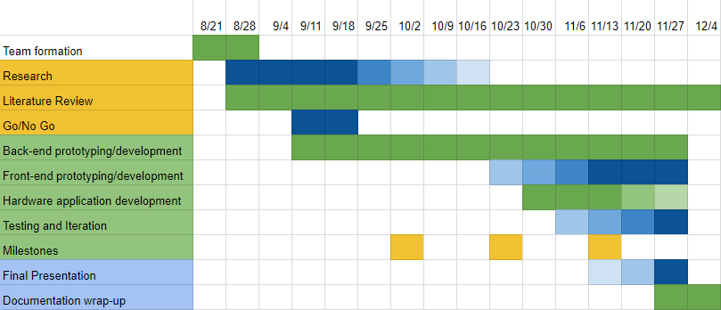

Project Background
Problem Statement
Spectators are disappointed that they are unable to capture and share their fleeting moment of fame as they appear on the jumbotron.
Research Question
How can we best capture and retrieve spectator appearances from live video feeds?
Goal
To develop a prototype of the Jumbo Capture application’s core functionality.
Meet The Team
Development Team
Zach Barnett

Tyler Brangman
James Tarr
Alex Wilson
Sponsor
Kristy Verticchio
Kempt LLC
Advisor
Carlos Morales
Associate Professor, Purdue Polytechnic Institute Distance Learning Director
Project Plan
Research
Research is focused primarily on the development of our end product, including topics such as:
Jumbotron systems
Video and Image Processing
Back-end (server-side) technologies
Front-end (client-side) technologies
Development
Development of our end product will result in a prototype which addresses the problem defined above.
Success will be measured based upon the end product's ability to provide a foundational prototype of the application's core functionality.
Timeline
{kind=link}
Milestone 1
PySceneDetect - clipping scenes from local drive
Development environments set up
Milestone 2
Database setup for accessing video files
Store video files and do basic queries
Milestone 3
Functional interface that can search videos, superimpose image, and export image/video
End of Semester
Final testing/debugging for prototype